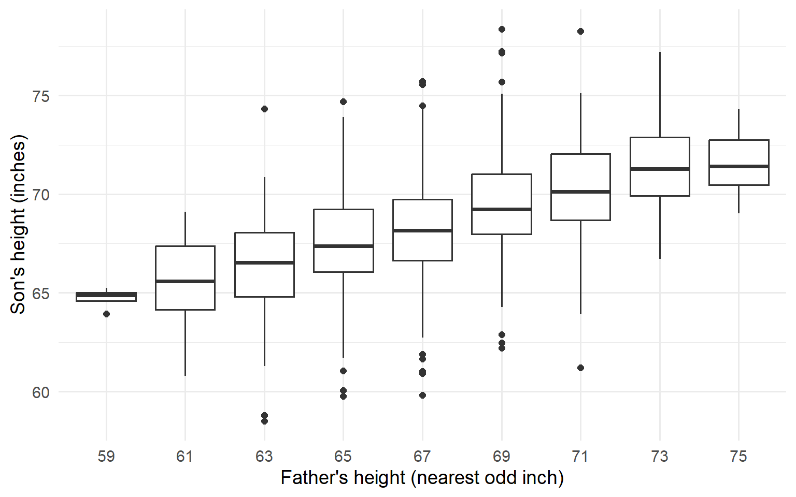
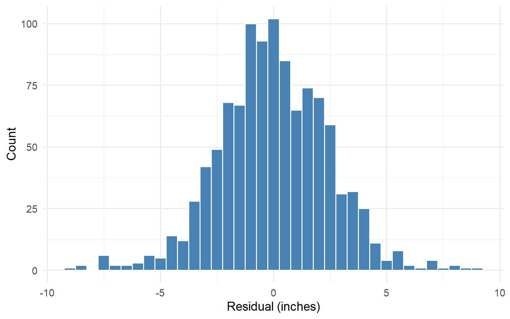
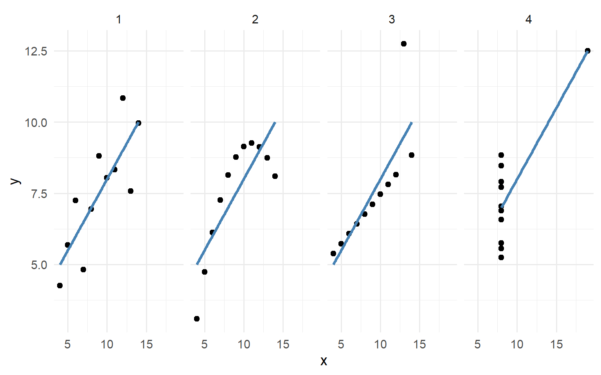

| Father height | n | Mean son height |
|---|---|---|
| 59 | 4 | 64.7 |
| 61 | 16 | 65.5 |
| 63 | 77 | 66.3 |
| 65 | 208 | 67.5 |
| 67 | 276 | 68.2 |
| 69 | 275 | 69.5 |
| 71 | 152 | 70.2 |
| 73 | 63 | 71.4 |
| 75 | 7 | 71.6 |
Conditional Distributions
EDA for Machine Learning
Chapter 2
Conditional Distributions
The Central Question
Given information about one variable, what can we say about another?
Example: If we know a father’s height, what can we predict about his son’s height?
This leads to the concept of conditional distributions.
Father-Son Heights: Review

Figure 1: Heights of father-son pairs
Conditional Distribution of Son’s Height
Figure 2: Son’s height distribution for each father height interval
Conditional Expectation
The conditional expectation \(E(Y | X)\) is the average value of \(Y\) given \(X\).
The Graph of Averages

Figure 3: Conditional mean of son’s height given father’s height
Key Observation
The graph of averages is approximately linear.
This suggests we can approximate the conditional expectation with a straight line.
→ The regression line
Z-Scores and Standard Units
Standardizing Variables
To compare variables on different scales, convert to standard units (z-scores):
\[Z_x = \frac{X - \mu_x}{\sigma_x}\]
Interpretation: Number of standard deviations above or below the mean.
Sample Z-Scores
In practice, we use sample estimates:
\[\hat{Z}_x(x_k) = \frac{x_k - \bar{x}}{s_x}\]
where \(\bar{x}\) is the sample mean and \(s_x\) is the sample standard deviation.
Two Lines Through the Data
The SD Line
The SD line passes through the point of averages with slope \(\frac{s_y}{s_x}\):
\[y = \bar{y} + \frac{s_y}{s_x}(x - \bar{x})\]
Equivalently: \(\hat{Z}_y = \hat{Z}_x\)
Property: Minimizes sum of squared perpendicular distances to points.
The Regression Line
The regression line has slope \(r \cdot \frac{s_y}{s_x}\):
\[y = \bar{y} + r \frac{s_y}{s_x}(x - \bar{x})\]
Equivalently: \(\hat{Z}_y = r \cdot \hat{Z}_x\)
Property: Minimizes sum of squared vertical distances to points.
Comparing the Two Lines

Figure 4: Regression line (blue) vs SD line (red)
Why the Difference?
Both lines pass through \((\bar{x}, \bar{y})\).
The regression line is less steep because \(|r| \le 1\).
This is the mathematical basis of regression to the mean.
The Correlation Coefficient
\[r = \frac{1}{n-1} \sum_{k=1}^{n} \hat{Z}_x(x_k) \cdot \hat{Z}_y(y_k)\]
Properties:
- \(-1 \le r \le 1\)
- \(r = \pm 1\) only if points fall exactly on a line
- \(r = 0\) means no linear association
Father-Son Correlation
| Statistic | Value |
|---|---|
| Father mean | 67.70 |
| Son mean | 68.70 |
| Father SD | 2.74 |
| Son SD | 2.81 |
| Correlation r | 0.50 |
With \(r \approx 0.5\), the regression line has about half the slope of the SD line.
Regression Residuals
Fitted Values and Residuals
For each observation:
- Fitted value: \(\hat{y}_k = \bar{y} + r \frac{s_y}{s_x}(x_k - \bar{x})\)
- Residual: \(e_k = y_k - \hat{y}_k\)
Residuals measure how far each point falls from the regression line.
Distribution of Residuals
Figure 5: Histogram of regression residuals
Residuals Should Be…
- Centered around zero ✓
- Roughly symmetric ✓
- No pattern when plotted against \(x\) or \(\hat{y}\)
Patterns in residuals suggest the model is missing something.
The Bivariate Normal
A Special Case
If \((X, Y)\) follows a bivariate normal distribution:
- The conditional distribution \(Y | X\) is normal
- The conditional mean \(E(Y|X)\) is exactly the regression line
- The conditional SD is \(\sigma_y \sqrt{1 - r^2}\)
Father-son heights are well approximated by a bivariate normal.
Variance Reduction
Conditioning on \(X\) reduces the variance of \(Y\):
\[\text{Var}(Y|X) = \sigma_y^2 (1 - r^2)\]
For father-son data with \(r \approx 0.5\):
\[\sqrt{1 - r^2} \approx 0.87\]
Knowing father’s height reduces son’s height SD by about 13%.
Cautionary Tales
Robust Statistics
The mean and SD are sensitive to outliers.
Alternatives:
| Sensitive | Robust |
|---|---|
| Mean | Median |
| Standard deviation | IQR |
The regression line inherits this sensitivity.
Anscombe’s Quartet
Four data sets with identical summary statistics:
- Same means, SDs, and correlation
- Same regression line
Yet the data look completely different!
Anscombe’s Quartet: The Data
Figure 6: Four data sets with identical regression statistics
The Lesson
Always visualize your data!
Summary statistics can hide:
- Nonlinear relationships
- Outliers
- Clusters
- Data errors
Statistical Independence
Definition
Random variables \((X, Y)\) are independent if:
\[P(X \in A, Y \in B) = P(X \in A) \cdot P(Y \in B)\]
for all sets \(A\) and \(B\).
Implication: Knowing \(X\) tells you nothing about \(Y\).
Independence and Correlation
If \((X, Y)\) are independent, then \(r = 0\).
But the converse is false!
\(r = 0\) only means no linear association.
Variables can be dependent but uncorrelated.
Testing Independence: Categorical Variables
For categorical variables, use the chi-squared test.
Idea: Compare observed counts to expected counts under independence.
\[\chi^2 = \sum_{j,k} \frac{(O_{jk} - E_{jk})^2}{E_{jk}}\]
Example: Handedness and Sex
| handedness | male | female |
|---|---|---|
| right | 934 | 1070 |
| left | 113 | 92 |
| ambi | 20 | 8 |
Is handedness independent of sex?
Chi-Squared Test Result
\(\chi^2 =\) 11.8, df = 2, p-value = 0.0027
Conclusion: Strong evidence against independence.
Males are more likely to be left-handed or ambidextrous.
Simpson’s Paradox
UC Berkeley Admissions (1973)
| Sex | Admission Rate |
|---|---|
| Male | 44.5% |
| Female | 30.4% |
This looks like clear evidence of bias against women.
But Wait…
| Dept | Male % | Female % |
|---|---|---|
| A | 62 | 82 |
| B | 63 | 68 |
| C | 37 | 34 |
| D | 33 | 35 |
| E | 28 | 24 |
| F | 6 | 7 |
Four of six departments admitted women at higher rates!
What Happened?
Women applied disproportionately to departments with low overall admission rates.
Department is a confounding variable.
The aggregate pattern reverses when we condition on department.
Simpson’s Paradox: The Lesson
A pattern in aggregated data can reverse when data are disaggregated by a relevant variable.
Always ask: Is there a confounding variable I’m missing?
Measures of Association
What We’ve Covered
| Variables | Measure |
|---|---|
| Both continuous | Correlation \(r\) |
| Both categorical | Chi-squared \(\chi^2\) |
Both measure departure from independence.
Looking Ahead
Information theory provides an alternative framework:
- Entropy
- Mutual information
- KL divergence
These capture nonlinear relationships that correlation might miss.
→ Chapter 6
Summary
Chapter 2: Key Takeaways
- Conditional distributions show how one variable varies given another
- The graph of averages can be approximated by the regression line
- Correlation measures linear association; \(r = 0\) doesn’t mean independence
- Always visualize — summary statistics can deceive (Anscombe)
- Simpson’s paradox reminds us to look for confounders
Key Formulas
| Concept | Formula |
|---|---|
| Z-score | \(\hat{Z}_x = \frac{x - \bar{x}}{s_x}\) |
| Regression line | \(\hat{Z}_y = r \cdot \hat{Z}_x\) |
| Correlation | \(r = \frac{1}{n-1}\sum \hat{Z}_x \hat{Z}_y\) |
| Chi-squared | \(\chi^2 = \sum \frac{(O - E)^2}{E}\) |
Exercises
Team Exercise 1: Bivariate Normal Construction
Given independent standard normal \(X\) and \(Z\), and correlation \(r\):
- Construct \(Y = rX + \sqrt{1 - r^2} Z\)
- What are the unconditional mean and SD of \(Y\)?
- What is \(\text{Cor}(X, Y)\)?
- How would you generalize to arbitrary means \((\mu_x, \mu_y)\) and SDs \((\sigma_x, \sigma_y)\)?
Team Exercise 2: Simpson’s Paradox
The UC Berkeley admissions example showed an aggregate bias that reversed within departments.
- As a team, construct a different example of Simpson’s paradox (can be hypothetical).
- What is the lurking variable in your example?
- Which analysis gives the “correct” answer—aggregated or disaggregated?
Team Exercise 3: Correlation vs. Independence
Construct an example where \(X\) and \(Y\) are statistically dependent but have \(r = 0\).
- Sketch the joint distribution of \((X, Y)\).
- Why does correlation fail to detect the dependence?
- What does this imply for feature selection in machine learning?
Discussion Questions
“Correlation does not imply causation.” When does correlation suggest causation?
In what situations is an aggregated analysis appropriate despite Simpson’s paradox?
How would you explain conditional expectation to a manager?
Resources
- Freedman, Pisani, Purves: Statistics (4e)
- Bickel et al.: “Sex Bias in Graduate Admissions” (1975)
- Wikipedia: Simpson’s paradox